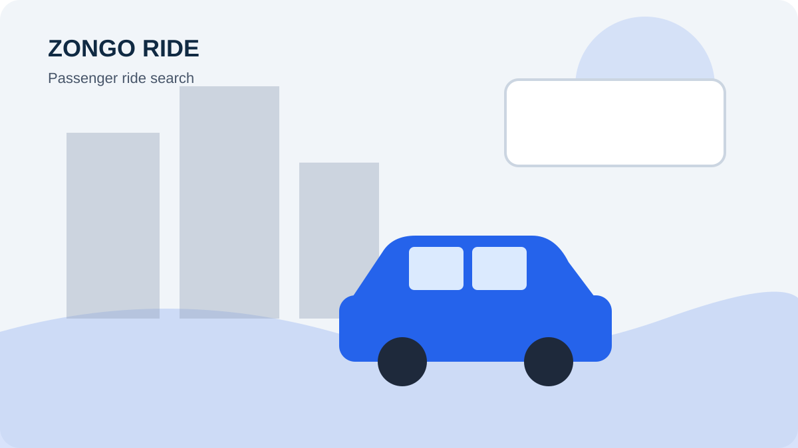

ZONGO RIDE · BUSINESS GROWTH · MOBILITY & INVESTMENT RESEARCH
How to Research the Ride-Hailing Market Before Considering an Investment
How to Research the Ride-Hailing Market Before Considering an Investment. This in-depth guide is for people researching the ride-services and mobility marketplace sector exploring how passenger journeys, customer access, employee travel and commercial decisions fit together. It explains practical booking workflows, stakeholder responsibilities, cost controls, performance measures, risk checks and responsible growth. Zongo Ride is a ride marketplace that may help people explore ordinary ride options where it operates and where a driver accepts a journey. It does not guarantee a ride, business revenue, driver income or investment returns.

Start with the business problem
The business case should be framed around the outcome rather than the vehicle. For a shop, that outcome might be a customer arriving for a booked consultation; for an employer, it may be a field employee reaching a scheduled site visit; for a fleet operator, it may be using a vehicle productively without ignoring maintenance and compliance. Separate the problem from the proposed solution. Record what changes for the passenger, the coordinator, the driver and the person paying.
Who benefits and how
Map the stakeholders before changing the process. A journey can involve the person requesting a ride, the passenger, the driver, a receptionist, a finance approver and a manager responsible for service quality. Each person needs different information. Record what changes for the passenger, the coordinator, the driver and the person paying.
Map the journey from request to completion
Create a simple journey map with four columns: the person's action, the information required, the responsible party and the fallback if the step fails. For example, if a driver cannot accept a request, the passenger should know whether to try another option, change the pickup time or use a different transport provider. If an event runs late, the organiser should have a communication route for updating attendees. Use feedback from the people who complete the journey to refine the process before expanding it.
Where Zongo Ride may fit
Zongo Ride can be considered as one possible discovery and booking channel for ordinary passenger journeys where the platform is available and a driver accepts the request. A business can direct a customer or employee to explore the service, or an individual can use the platform to look for a suitable ride. The practical value depends on local coverage, driver availability, the journey details, fare acceptance and the passenger's own requirements. Use feedback from the people who complete the journey to refine the process before expanding it.
Keep the platform's role precise when explaining it to customers, staff or potential partners. Zongo Ride is a ride marketplace, not a bank, investment fund, transport regulator, insurance company or guaranteed corporate shuttle. It does not promise a business a particular increase in sales, a driver a fixed income or an investor a financial return. For this topic, test the actual journey rather than relying on a general promise of convenience.
Build a repeatable booking workflow
Set expectations for each stage. A request is not a confirmed booking until the passenger has clear confirmation from the driver or service provider. Explain who will communicate changes, how cancellations are handled and what happens if the pickup point becomes inaccessible. Record what changes for the passenger, the coordinator, the driver and the person paying.
Make the customer or employee experience clear
Transport information is part of the service experience. A customer who knows where to meet a driver, how to recognise the agreed vehicle and whom to contact if plans change is less likely to feel abandoned. A visitor should not have to search through several unrelated messages to find the address. Record what changes for the passenger, the coordinator, the driver and the person paying.
- State the pickup and destination clearly.
- Confirm the fare, timing and driver acceptance before relying on the journey.
- Explain who pays and who handles a change or cancellation.
- Provide a suitable alternative for time-sensitive travel.
Coordinate people, drivers and partners
Partners should understand the boundaries of their responsibilities. A hotel may explain how a guest can find a ride, but that does not mean the hotel controls the driver's schedule. An employer may approve a journey, but the driver remains responsible for operating within applicable transport rules. Use feedback from the people who complete the journey to refine the process before expanding it.
Plan costs and commercial value
Estimate the full cost of the journey before making claims about savings or business value. Include the fare, any booking or platform charges that apply, staff time spent arranging the trip, waiting time, cancellation exposure and the cost of an alternative if the ride is unavailable. For an owned vehicle, include depreciation, financing, insurance, permits, fuel or energy, tyres, servicing, cleaning, parking and downtime. Use feedback from the people who complete the journey to refine the process before expanding it.
Treat additional revenue as a hypothesis to test, not an automatic result of offering rides. Easier access may help a customer attend an appointment or visit a shop, but the business still needs to measure whether the customer came, completed a purchase and returned. A company may save coordination time, but it should record the hours before and after the process changes. For this topic, test the actual journey rather than relying on a general promise of convenience.
Use pricing and payment rules transparently
Payment handling must follow local law, platform terms and the business's own financial controls. Do not collect card details or sensitive financial information through an unsecured message. Keep a record of approved business expenses and separate them from personal trips. Record what changes for the passenger, the coordinator, the driver and the person paying.
Track measures such as verified active users, completed trips, repeat rate, contribution margin, retention, cash burn and regulatory exposure. Separate enquiries from accepted requests and completed journeys; a large number of clicks or messages is not proof of commercial value.
Choose useful performance measures
Measure the journey outcomes that matter to the business, not vanity figures. Page visits, app downloads or ride enquiries can indicate interest, but they do not prove that a journey was completed or that the business benefited. More useful measures may include confirmed bookings, completed journeys, arrival within the required window, cancellation reasons, repeat use, customer feedback and total cost per completed trip. Record what changes for the passenger, the coordinator, the driver and the person paying.
Run a limited pilot before scaling
At the end of the pilot, review both positive and negative evidence. Count completed journeys, late arrivals, cancellations, complaints, cost and staff time. Interview a few users to learn where instructions were unclear. Use feedback from the people who complete the journey to refine the process before expanding it.
A pilot helps a business learn without committing to a large rollout. Choose one location, team, customer group or journey category; define the start and end dates; set a spending limit; and name the person responsible for the result. Tell participants what the pilot is testing and what it is not testing. Keep local coverage, accepted fares and driver availability as facts to verify, not assumptions.
Give the pilot a named owner, a defined audience, a review date, a spending ceiling and a stop-or-adjust rule. A small trial is not proof that the model will work in every location or season.
Compliance, insurance and duty of care
Transport rules depend on the country, city, vehicle type and service model. A business that simply shares ride information may have different obligations from one that employs drivers, owns vehicles, sells transport packages or arranges paid passenger services. Before launching a programme, ask the relevant local authority, insurer and legal adviser what rules apply. Use feedback from the people who complete the journey to refine the process before expanding it.
Protect privacy, safety and trust
Trust is built through accurate information and a reliable response when something goes wrong. Give passengers a way to report a mismatch, late arrival or inappropriate conduct. Do not publish unverified testimonials, imply that every driver has a special certification or claim that a platform can prevent all incidents. Record what changes for the passenger, the coordinator, the driver and the person paying.
Avoid common implementation mistakes
A frequent mistake is launching transport messaging before confirming the operational details. A business may place a ride logo on its website, announce a partnership or promise convenient pickups without checking local coverage, driver acceptance or the route's practical requirements. Another mistake is asking staff to coordinate journeys without giving them a clear process or authority to resolve changes. Record what changes for the passenger, the coordinator, the driver and the person paying.
How drivers and businesses can benefit together
Businesses can support a fair experience by giving accurate trip details, respecting the driver's time, avoiding last-minute changes where possible and communicating any special requirement before confirmation. Drivers can support business customers by maintaining accurate profiles, responding professionally and being honest about routes and availability. A marketplace can help people discover one another, but it does not remove the need for clear communication and responsible conduct. Use feedback from the people who complete the journey to refine the process before expanding it.
How investors should assess the opportunity
People considering an investment connected with people researching the ride-services and mobility marketplace sector should separate the attractiveness of a broad market from the economics of a specific company. Ask what problem the business solves, who pays, how often customers return, what it costs to acquire and serve them, and what evidence supports the forecast. A ride marketplace, a fleet operator and a corporate transport broker have different capital needs and risk profiles. Use feedback from the people who complete the journey to refine the process before expanding it.
Request primary evidence wherever possible: financial statements, bank reconciliations, tax records, active-user definitions, completed-trip data, retention cohorts, insurance documents, contracts and regulatory approvals. Clarify whether figures are audited, management estimates or projections. Examine related-party transactions, customer concentration, refunds, cancellations, driver incentives and outstanding liabilities. For this topic, test the actual journey rather than relying on a general promise of convenience.
Build a responsible growth strategy
Partnerships can help reach new users, but each partner should have a clear role and a measurable reason to participate. A hotel may share ride information with guests; a business association may host an information session; a fleet operator may provide eligible drivers; and a technology vendor may support a booking workflow. Confirm responsibilities, data access, service promises, dispute handling and exit terms in writing. Record what changes for the passenger, the coordinator, the driver and the person paying.
Practical action plan and decision checklist
Turn the article's ideas into a short action plan. First, write a one-sentence description of the journey problem and identify the people affected. Second, confirm the local legal and insurance requirements. Record what changes for the passenger, the coordinator, the driver and the person paying.
Questions businesses and investors often ask
Does a ride marketplace automatically provide a company account, invoicing, accessible vehicles or contracted service levels? Do not assume so. Verify each feature and service requirement directly before advertising it. Use feedback from the people who complete the journey to refine the process before expanding it.
Illustrative example: applying the idea in an operating setting
Consider a growing professional firm arranging staff visits across two offices. This is a hypothetical example, not a Zongo Ride customer result or a forecast. The manager records the current process: how people ask for travel information, how many enquiries become completed journeys, how much staff time is spent answering questions and which problems recur. The manager then tests a limited ride-information workflow for one journey type. Participants receive a single message with the location, meeting point, timing, fare-confirmation reminder and a contact for changes. The business does not promise that a driver will always be available; it asks the passenger to confirm the trip and keeps another option for critical appointments.
At review, the team compares actual completed journeys with the baseline. Did people understand the instructions? Were requests accepted at the required times? Did the process create more work for reception? Were costs recorded accurately? Did any passenger need a service an ordinary ride could not provide? If the evidence is positive, the team can refine the instructions and test another route. If it is weak, the team can stop or redesign the trial before making a larger commitment. This evidence-led approach is more credible than assuming that a new transport option automatically creates growth.
A practical 30-day implementation roadmap
Days 1–5: define the use case
Interview the people affected by how to research the ride-hailing market before considering an investment. Gather examples of missed, delayed or difficult journeys; identify the locations and time windows involved; and define a successful outcome. Confirm whether an ordinary ride is appropriate or whether a specialist or contracted provider is required.
Days 6–10: validate service and responsibilities
Check local coverage and transport requirements. Verify what the marketplace supports in the target area, how driver acceptance is confirmed, how fares are communicated and what the fallback will be. Assign a process owner and document who approves, pays, communicates and handles complaints.
Days 11–20: run a limited pilot
Start with a small group and a defined budget. Provide plain-language instructions, record requests and outcomes, and collect feedback from passengers, coordinators and drivers. Do not expand during the measurement period unless a safety or operational issue requires a change.
Days 21–30: review and decide
Compare the pilot with the baseline using verified active users, completed trips, repeat rate, contribution margin, retention, cash burn and regulatory exposure. Record direct and indirect costs, unresolved issues and assumptions that proved wrong. Decide whether to stop, adjust or extend the test, and document the evidence behind that decision.
Decision checklist before committing money or making a promise
- The business need and intended passenger group are clearly defined.
- The route, time, fare and driver acceptance can be confirmed before the journey.
- The business has checked local rules, insurance and contractual responsibilities.
- Passengers know how to ask questions, change a request or report a problem.
- Personal information is collected only when necessary and handled appropriately.
- The budget includes staff time, waiting, cancellations and alternative transport.
- The team has a baseline and can measure completed journeys and business outcomes.
- No one is promising guaranteed bookings, guaranteed income or investment returns.
Frequently asked questions
Can Zongo Ride guarantee business transport at every location?
No. Availability depends on location, driver supply, route details and driver acceptance. Confirm each journey before relying on it, and keep an alternative for time-critical travel.
Will adding ride options automatically increase sales or productivity?
No. It may remove one access barrier, but results depend on demand, service quality, pricing, timing and operating costs. Measure actual outcomes before making a commercial claim.
Does Zongo Ride provide investment opportunities or guaranteed returns?
This guide does not offer shares, securities or investment products. Zongo Ride is described as a ride marketplace. Any business or investment decision requires independent due diligence, and capital can be lost.
What should a business do before launching?
Define the use case, check local requirements, verify service availability, set booking and payment rules, run a small pilot and review evidence before scaling.
Explore Zongo Ride
Interested in offering rides or looking for a ride? Explore Zongo Ride and check the options available in your area. Registration, driver acceptance and ride availability depend on local coverage and applicable requirements.
Explore as a DriverExplore as a Passenger